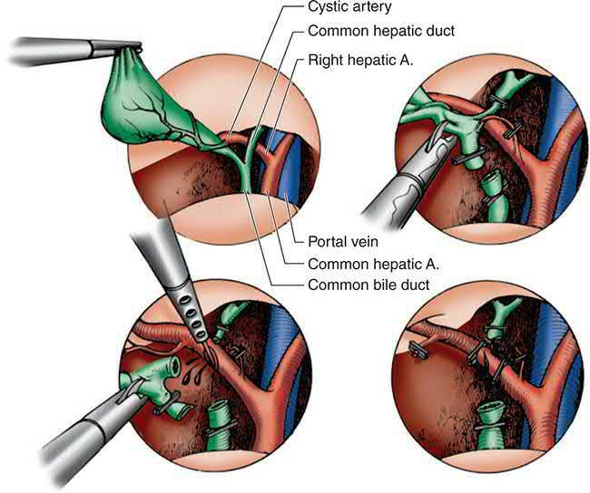
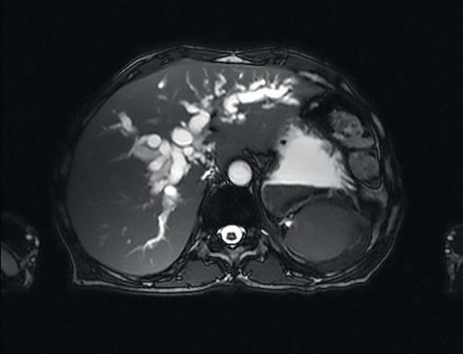
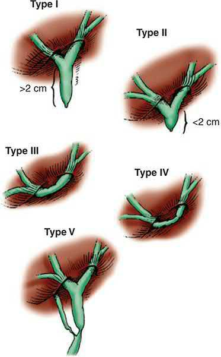
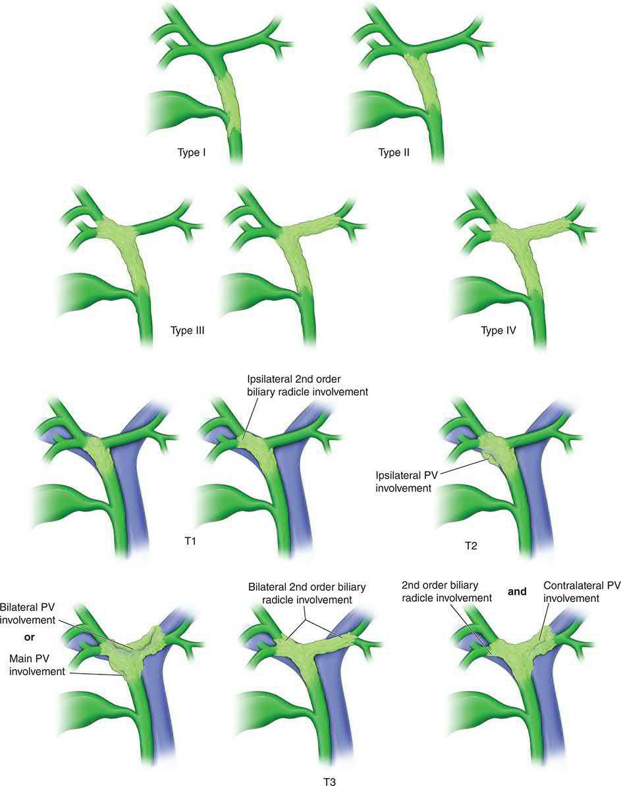
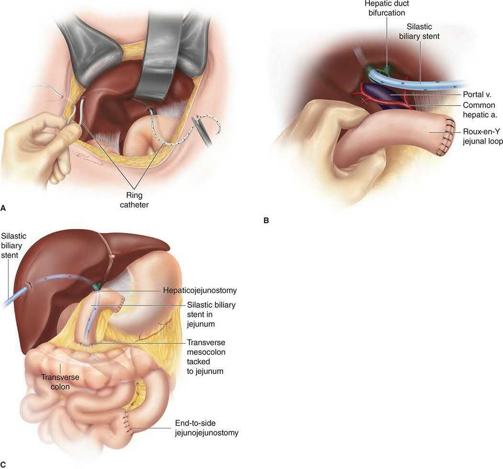
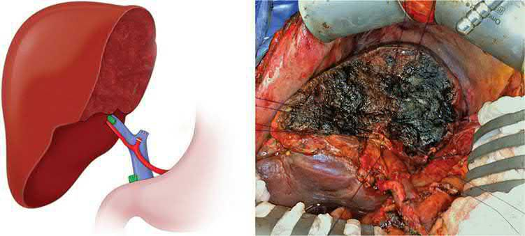

Biliary Strictures and Cholangiocarcinoma
Summary
- Biliary strictures may be benign (iatrogenic, inflammatory, or related to primary sclerosing cholangitis) or malignant (cholangiocarcinoma, pancreatic or ampullary cancer).
- Cholangiocarcinoma itself is an uncommon but increasingly diagnosed adenocarcinoma of the biliary epithelium, classified anatomically as intrahepatic, perihilar (Klatskin tumour, accounting for the majority of cases), or distal [1][2].
- Only 10–15% of patients are candidates for surgical resection, which offers the only realistic chance of long-term survival; most patients receive palliative biliary decompression and systemic chemotherapy [1].
- Approximately 6000 new cases are diagnosed annually in the United States, most in the fifth through seventh decades, with a slight male predominance, the opposite of the clear female predominance of gallbladder cancer [3].
As with hepatocellular carcinoma, there is no single NICE guideline on cholangiocarcinoma. UK guidance comes from NG12 for the referral threshold, a set of technology appraisals defining the NHS-funded systemic pathway, and two pieces of procedural guidance that place popular locoregional treatments firmly in the research-only category.
The referral trigger is the same one that applies to pancreatic cancer: refer people using a suspected cancer pathway referral if they are aged 40 and over and have jaundice [4].
Definition
A biliary stricture is a narrowing of the bile duct lumen, benign or malignant, that can obstruct bile flow and predispose to cholangitis or secondary biliary cirrhosis [1]. Cholangiocarcinoma is an adenocarcinoma arising from the biliary epithelium, classified by anatomic location into intrahepatic (peripheral, arising beyond the second-order bile ducts), perihilar/proximal (at the biliary confluence, "Klatskin tumours"), and distal (periampullary) subtypes, and histologically into mass-forming (nodular), periductal-infiltrating (sclerosing), and papillary (intraductal-growing) subtypes [1][2].
- Maingot's uses the term for cancers with cholangiocyte differentiation arising in the liver or biliary tree, excluding the ampulla of Vater and the gallbladder, and divides them into intrahepatic (iCCA, 10% of cases), perihilar (pCCA, 50%) and distal (dCCA, 40%).
- Perihilar disease is defined as lesions proximal to the cystic duct up to and including lesions involving the second-degree bile ducts [3].
- There is now increasing consensus that these are three distinct entities in epidemiology and pathobiology, not simply one disease in three positions [3].
- More than 90% of cholangiocarcinomas are adenocarcinomas [3].
Pathophysiology
- Benign strictures can arise anywhere along the biliary tree.
- Intrahepatic strictures usually follow cholangiohepatitis or ischaemic injury; extrahepatic strictures follow any inflammatory or ischaemic process along the CBD.
- Chronic pancreatitis produces characteristically long (2–4 cm), gradually tapering strictures of the intrapancreatic CBD [5].
- The most common cause of a mid-CBD stricture is iatrogenic injury, most often post-cholecystectomy, reported in up to 1% of postcholecystectomy patients [5]. Mirizzi syndrome occurs when a large stone impacted in the gallbladder neck or a parallel-running cystic duct compresses and inflames the adjacent common hepatic duct, sometimes progressing to a cholecystocholedochal fistula [5][6].
Why the injury happens
Cholecystectomy accounts for over 90% of postoperative biliary strictures and injuries, and the final common pathway of most injuries is either a technical error or misinterpretation of the anatomy [7]. The "classic" injury is misidentification of the common bile duct as the cystic duct, or of an aberrant right sectoral duct as the cystic duct; the common hepatic duct is often not clipped but divided by scissors or cautery [7].
Three families of contributing factor are described. Pathological: acute cholecystitis with severe inflammation in the porta hepatis and Calot's triangle, and complicated gallstone disease generally, complex cases including acute cholecystitis, cholangitis and gallstone pancreatitis carry an injury rate of 1.2% against 0.4% for other indications, and a conversion rate of 30% against 3% [7]. Anatomic: a congenitally short cystic duct or one shortened by an impacted stone, a long common wall between cystic and common bile duct, and a cystic duct inserting into the right hepatic duct, the cystic duct's insertion varying from almost at the confluence to running parallel to the common hepatic duct and joining almost at the level of the pancreas [7]. Technical: standard laparoscopy gives a limited two-dimensional view, and the classic injury occurs when the cystic duct and common bile duct are aligned in the same plane, leading to clipping and division of the wrong one. Obesity, chronic inflammation, excessive fat in the dissection area, inadequate exposure, poor or excessive clip placement, injudicious electrocautery and bleeding into the field all increase risk [7].
Incidence across the laparoscopic era
| Era or series | Major bile duct injury rate |
|---|---|
| Open cholecystectomy, over 42,000 cases | 0.2% |
| Open cholecystectomy, literature review of over 25,000 cases since 1980 | 0.3% |
| Early laparoscopic era, review of nearly 125,000 cases | 0.85% overall biliary injury, 0.52% major injury |
| Recent multicentre estimates | 0.08% to 0.6% |
| New York SPARCS 5-year review, over 156,000 laparoscopic cholecystectomies | 0.08% (149 injuries) |
- Table reformats the reported incidence data [7].
- The rate of injury with laparoscopic cholecystectomy is now comparable to that of open cholecystectomy, reflecting increased experience, improved instrumentation and movement beyond the learning curve, but the concern has inverted: with newer graduates having less experience of open cholecystectomy, the injury rate for the open procedure in a difficult gallbladder may be rising, and conversion from laparoscopic to open may itself increase risk [7].
- An "extreme" vasculobiliary injury involving the hepatic artery and/or portal vein may occur on conversion in the presence of severe inflammation when a fundus-down cholecystectomy is performed: severe haemorrhage is common, caused by dissection behind the cystic plate into the right portal pedicle, and the result can be liver infarction or diffuse bile duct infarction requiring hepatectomy, urgent transplantation, or death [7].

Cholangiocarcinoma arises from chronic biliary epithelial inflammation and compensatory proliferation. Primary sclerosing cholangitis (PSC) is the most commonly identified risk factor in the West, carrying a cumulative annual risk of about 1.5% per year, increased further with associated inflammatory bowel disease; PSC-associated cholangiocarcinoma tends to occur at a younger age (30–50 years) and is more often multifocal than sporadic disease [1][2]. Recurrent pyogenic cholangitis (hepatolithiasis), congenital choledochal cysts (via exposure to refluxing pancreatic secretions), liver flukes (Clonorchis sinensis, Opisthorchis viverrini), hepatitis B/C, cirrhosis, and chemical carcinogens (Thorotrast, vinyl chloride, dioxin) are all recognised risk factors [1][2].
The three subtypes are genetically distinct
- Intrahepatic cholangiocarcinoma is the most dissimilar of the three. ERBB2/HER2 is less frequently altered in intrahepatic tumours while genes of the FGF pathway are more frequently altered, and SMAD4 may be less frequently altered; alterations in K-ras, p53 and P16INK4A are prevalent across all cholangiocarcinomas, and chromatin remodelling gene alterations such as ARID1A are common [3]. The most notable genetic difference is in isocitrate dehydrogenase: IDH1/2 mutations occur in approximately 20% of intrahepatic cholangiocarcinomas and are generally not found in the other types [3].
- Even the cell of origin may differ: while all cholangiocarcinomas were once thought to arise from cholangiocytes, liver cells (hepatocytes, hepatoblasts and hepatic progenitor cells) can give rise to intrahepatic disease, a shared origin with hepatocellular carcinoma that may explain their shared aetiological factors and similar treatment.
- Mutant IDH1/2 blocks liver progenitor cells from hepatocyte differentiation and promotes biliary differentiation and transformation [3].
Clinical features
- Benign strictures typically present with cholestatic jaundice, pruritus, and (if superimposed infection occurs) features of cholangitis [5].
- Cholangiocarcinoma's presentation depends on location: intrahepatic tumours often present with abdominal pain, weight loss, or as an incidental finding, without early biliary obstruction; proximal and distal tumours more typically cause painless, progressive jaundice, pruritus and dark urine [1][2].
- Unilobar biliary obstruction may cause unilateral hepatic lobar atrophy with compensatory contralateral hypertrophy, delaying jaundice and thus presentation until a later stage [2].
- A palpable, non-tender gallbladder in a jaundiced patient (Courvoisier's sign) suggests a distal obstructing malignancy rather than gallstones [1].
- Cachexia and jaundice are often evident on examination in advanced disease [1].
When and how a bile duct injury declares itself
- Fewer than one-third of major bile duct injuries are detected at the time of the laparoscopic cholecystectomy [7].
- Intraoperative clues are a persistent and unexpected bile leak, atypical anatomy, a second bile duct discovered during dissection, or abnormal duct anatomy found on careful examination of the removed specimen and cystic duct [7].
- After open cholecystectomy only 10% of injuries are suspected after the first week but nearly 70% are diagnosed within 6 months; injuries after laparoscopic cholecystectomy are recognised earlier, probably from heightened awareness [7].
- Early presentation depends on the type of injury.
- Uncontrolled bile leakage into the peritoneal cavity gives abdominal pain, distension, nausea and vomiting with fever or other signs of sepsis within the first week, and bilious drainage from incision sites or drains demands prompt investigation.
- A freely draining leak gives biliary ascites with chemical peritonitis, while loculation gives a biloma or, if infected, a subhepatic or subdiaphragmatic abscess presenting more subtly with low-grade fever and localised pain [7].
- Complete ligation by a clip instead gives obstructive jaundice, usually without cholangitis [7]. Because significant abdominal complaints are uncommon after an uncomplicated laparoscopic cholecystectomy, any patient with such symptoms should be evaluated without delay for a bile leak, failure to recognise a major leak or to treat it can produce life-threatening sepsis and multisystem organ failure [7].
- Late presentation, months to years afterwards, is with non-specific abdominal complaints, jaundice, pruritus, cholangitis or deranged liver function tests.
- An isolated right sectoral hepatic duct injury may present with unexplained fevers, pain or malaise, with episodes of cholangitis that are typically mild and respond to antibiotics.
- Less often the presentation is painless jaundice that can be mistaken for a malignant stricture [7].
- Physical findings are usually non-specific, distension and pain with bile peritonitis, focal tenderness with a collection, excoriations from pruritus if jaundiced, hepatomegaly with chronic obstruction, and splenomegaly if there is portal hypertension from portal venous injury or severe hepatocellular damage [7].
Etiology
- See Pathophysiology above for risk factors specific to strictures and cholangiocarcinoma.
- In summary, benign causes of stricture include congenital biliary atresia, surgical bile duct injury (cholecystectomy, choledochotomy, gastrectomy, hepatic resection, transplantation), inflammatory conditions (stones, cholangitis, parasitic infestation, pancreatitis, sclerosing cholangitis, radiotherapy), and trauma [1].
- Malignant causes of stricture, beyond cholangiocarcinoma itself, include pancreatic head cancer, ampullary carcinoma, and gallbladder cancer invading the duct [8].
- Cholangiocarcinoma is anatomically distributed such that hilar tumours account for roughly 60% of cases in Western series, distal tumours 20–30%, and intrahepatic tumours 10–20% [1], though the incidence of intrahepatic cholangiocarcinoma specifically is rising worldwide [2].
Risk factors quantified
- Most patients have no identifiable predisposing factor, but in Western countries PSC is the most important: approximately 30% of Western cholangiocarcinoma is diagnosed in patients with PSC, the estimated lifetime incidence among PSC patients is 5% to 10%, and approximately half of those cancers are diagnosed within 24 months of the PSC diagnosis, at a mean age in the fourth decade against the seventh decade in the general population [3].
- The full list of recognised risk factors is PSC, liver fluke infestation with Opisthorchis viverrini or Clonorchis sinensis, choledochal cysts, Caroli disease, hepatolithiasis, chemicals such as Thorotrast and dioxin, hepatitis C, Lynch syndrome II, and bile duct adenoma with multiple biliary papillomatosis [3].
- In Asian countries fluke infestation and hepatolithiasis dominate; cirrhosis and hepatitis B or C are increasingly recognised, especially for intrahepatic disease; increased risk is reported in workers in the auto, rubber, chemical and wood-finishing industries; and obesity and metabolic syndrome are reported risk factors particularly for intrahepatic cholangiocarcinoma [3].
Diagnosis
- Investigation of a biliary stricture begins with liver function tests (raised ALP, GGT, bilirubin) and ultrasound, followed by MRCP or ERCP (with brush cytology for a dominant stricture), PTC, and CT as needed to delineate the level and cause of obstruction [1].
- For suspected cholangiocarcinoma, ultrasound establishes the level of obstruction (perihilar tumours show intrahepatic ductal dilation with a collapsed gallbladder and distal ducts; distal tumours show dilation of the whole extrahepatic tree plus gallbladder distension) [9].
- Triphasic/cross-sectional CT and MRI/MRCP assess resectability by defining the tumour's relationship to the biliary confluence and portal vascular structures [1][2].
- CA 19-9 may be elevated but is non-specific, being raised in benign biliary obstruction as well as malignancy [1].
- Direct cholangiography via ERCP (favoured for distal lesions) or PTC (favoured for proximal lesions, allowing more precise mapping of intrahepatic ducts and biliary drainage) permits biopsy, although diagnostic yield of biopsy is low (non-diagnostic in 40–80% of cases) [1].
- Cholangioscopy as an adjunct to ERCP increases diagnostic accuracy from 78% to 93% [1].
- Tissue diagnosis is not required before resection in an operative candidate with typical imaging, since cytology/brushings are frequently falsely negative [2].
- Staging laparoscopy reduces the incidence of non-therapeutic laparotomy (historically over 50% of explorations found unresectable disease, a rate decreasing with improved imaging) [2].
- A bile duct stricture without a history of pancreatitis or biliary surgery is cancer until proven otherwise [10].
Investigating a suspected bile duct injury
Patients presenting with a leak usually have no biliary obstruction, so bilirubin is normal or only slightly raised from peritoneal absorption of bile; a postoperative leak or cholangitis raises the white cell count with pyrexia or frank sepsis [7]. Established postoperative strictures give a stereotypical cholestatic profile, elevated alkaline phosphatase with normal or slightly raised transaminases and bilirubin usually in the range of 2 to 6 mg/dL, with cirrhosis, low albumin and abnormal coagulation only in long-standing obstruction [7].
- Imaging follows a defined order.
- Ultrasound and CT both detect bilomas, biliary ascites and duct dilatation, but ultrasound has little value in assessing the extent of a stricture and is unhelpful if the tree is decompressed; abdominal CT is usually the best first-line study, and should be performed with arterial-phase contrast to evaluate for concomitant vascular injury [7].
- HIDA scanning demonstrates leakage non-invasively but lacks the sensitivity to define the anatomic site; MRCP effectively demonstrates leakage or obstruction and precisely defines the biliary anatomy and nature of the injury, so that in selected cases it may be all that is needed before definitive repair; and sinography through operatively placed drains can define the anatomy and source of the leak [7].
- Cholangiography remains the gold standard, but which route depends on what the injury is
- Endoscopic retrograde cholangiography approaches from below and is useful only if the native duct is intact, it is the procedure of choice for a suspected cystic duct leak or a leak from a duct of Luschka, where an endoprosthesis can also control the leak.
- Most major injuries involve complete transection, in which case the retrograde cholangiogram shows only a normal distal duct terminating in a misapplied clip, defining neither the site of leakage nor the proximal anatomy needed for reconstruction; PTC is then necessary, and a percutaneous drainage catheter should be placed at the same time to decompress the tree, treat cholangitis and control the leak [7].
- Preoperative biliary decompression in patients presenting with jaundice but without cholangitis has not been shown to improve outcome [7].
Imaging cholangiocarcinoma
Transabdominal ultrasound is a useful first study for obstructive jaundice, and biliary dilation in the absence of a benign cause should prompt further imaging [3]. For intrahepatic tumours CT and MRI both identify the mass and assess vascular involvement; for perihilar and distal tumours both identify the level of obstruction, and MRCP has the advantage of being non-invasive without requiring instrumentation of the tree [3].

Scoring and Severity
- Perihilar (Klatskin) tumours are staged using the Bismuth-Corlette classification: Type I involves the common hepatic duct below the confluence; Type II involves the confluence itself; Types IIIa/IIIb extend into the right or left secondary ducts respectively; Type IV involves both secondary ductal systems or is multicentric [1][2].
- The Blumgart (MSKCC) T-stage system additionally incorporates the extent of vascular involvement and hepatic lobar atrophy for perihilar tumours: T1 involves the confluence without extension to second-order ducts.
- T2 adds unilateral second-order extension with ipsilateral portal vein involvement or lobar atrophy.
- T3 adds bilateral second-order extension, or unilateral extension with contralateral vascular/ductal/atrophic involvement, or main/bilateral portal venous involvement [1].
- The AJCC system now contains separate staging systems for intrahepatic, perihilar and distal disease, reflecting their recognition as distinct entities [3].
- The Strasberg classification of postoperative bile duct strictures (modifying the Bismuth system) categorises iatrogenic injuries by location, from small duct-of-Luschka leaks through to complete occlusion of sectoral or main ducts (types A–E, with E1–E5 mirroring Bismuth 1–4 plus aberrant duct injury), and guides the approach to biliary reconstruction [5].
- The Bismuth classification grades major injuries by the level of obstruction relative to the hepatic duct confluence, or by involvement of an aberrant right sectoral duct with or without a concomitant hepatic duct stricture; its drawback is that limited strictures, isolated right hepatic duct strictures and cystic duct leaks cannot be classified at all, which is why the Strasberg system, covering every type of injury, is now used extensively for laparoscopic injuries [7].
- Minor injuries, lacerations, a clip placed on an intact duct, electrocautery injury, or avulsion of the cystic duct, fall outside the Bismuth scheme entirely [7].


Treatment and Management
- Benign strictures: endoscopic (ERCP with sphincterotomy, balloon dilation and stenting) or percutaneous therapy is generally regarded as primary treatment, achieving long-term success in over 50% of patients; when this fails, surgical biliary-enteric anastomosis (typically Roux-en-Y hepaticojejunostomy) achieves success rates up to 90% [5].
- Maingot's frames the balance the other way round: non-operative balloon dilatation by the percutaneous transhepatic or endoscopic route is appropriate in selected patients with intact biliary-enteric continuity, but operative repair remains the mainstay of treatment for benign strictures [7].
- Mirizzi syndrome is treated by cholecystectomy, sometimes requiring bile duct repair or choledochojejunostomy when a large fistula is present [5].
- Cholangiocarcinoma: a multidisciplinary approach is required, and treatment depends on site and extent of disease.
- Most patients (85–90%) present with disease too advanced for resection and receive palliative care, biliary decompression by ERCP or PTC stenting, and palliative chemotherapy with gemcitabine plus cisplatin (established by the ABC-02 trial), with the addition of a PD-L1 checkpoint inhibitor supported by the TOPAZ-1 trial [1][2].
- In ABC-02, median overall survival was 11.7 months with gemcitabine plus cisplatin against 8.1 months with gemcitabine alone; notably, in the subgroup with perihilar (and ampullary) disease the benefit did not reach statistical significance [3].
- Adjuvant capecitabine, established by the BILCAP trial, is standard following complete (R0/R1) resection [2].
- Maingot's is more cautious about adjuvant therapy generally, noting that although adjuvant chemotherapy, radiotherapy or chemoradiotherapy is commonly offered, unequivocal efficacy data from prospective randomised trials are lacking, and that neoadjuvant therapy, associated with anecdotal reports of response sufficient to permit margin-negative resection in advanced disease, needs further study [3].
- Checkpoint inhibition with pembrolizumab may benefit metastatic or unresectable disease with defective mismatch repair [3].
Liver-directed therapies are increasingly used for liver-only intrahepatic disease, extrapolated from hepatocellular carcinoma on the basis of their possible common cell of origin: transcatheter arterial chemoembolisation, transcatheter arterial radioembolisation and radiofrequency ablation are reported to be safe and possibly efficacious, and as in hepatocellular carcinoma the underlying liver disease may be the only barrier to resection, which makes locoregional alternatives attractive [3].
Preoperative biliary drainage
- Preoperative biliary drainage is generally reserved for patients with marked hyperbilirubinaemia (>6–10 mg/dL) or delayed time to surgery, given an increased risk of infectious complications after stenting [1][2].
- The evidence differs by tumour site.
- For distal cholangiocarcinoma, retrospective data and the randomised DROP trial in periampullary cancer show routine preoperative stenting increases perioperative morbidity, especially infectious complications, so routine stenting is not recommended, reserved instead for patients with obstructive jaundice facing significant delay, such as those having neoadjuvant therapy; because patients with bilirubin above 14.6 mg/dL were excluded from DROP, and profoundly elevated bilirubin can cause end-organ dysfunction, the safest approach for that group is unclear [3].
- For perihilar disease the relationship is less clear and the argument runs the other way: since liver resection is indicated in most cases, there is concern that a remnant whose biliary flow was obstructed preoperatively may regenerate poorly, so drainage may benefit patients expected to have a small future liver remnant before an extended resection, although routine drainage may not be required [3].
- Three practical points follow. Drain the future liver remnant, not the liver to be resected, since the point is to relieve obstruction in the part that must regenerate.
- Plan the drainage as though the patient may prove unresectable at exploration.
- And place drains without injecting contrast into or instrumenting segments that are not drained, because cholangitis will develop in those segments [3].
The NHS systemic pathway for biliary tract cancer is built from three appraisals, one for everyone and two defined by molecular subtype.
| Appraisal | Agent | Population |
|---|---|---|
| TA944 | Durvalumab with gemcitabine and cisplatin | Locally advanced, unresectable or metastatic biliary tract cancer in adults, within its marketing authorisation |
| TA722 | Pemigatinib | Locally advanced or metastatic cholangiocarcinoma with an FGFR2 fusion or rearrangement that has progressed after systemic therapy |
| TA948 | Ivosidenib | Locally advanced or metastatic cholangiocarcinoma with an IDH1 R132 mutation after one or more systemic treatments |
Table reproduces the recommendations, each conditional on the company providing the drug according to its commercial arrangement [11][12][13].
- The committee reasoning shows how thin the alternatives are.
- Standard treatment for unresectable or advanced biliary tract cancer is gemcitabine and cisplatin, and adding durvalumab increased both time to progression and survival against that standard [11].
- For FGFR2-rearranged disease progressing after systemic therapy, current treatment is symptom control with or without mFOLFOX; the evidence for pemigatinib comes from a single non-comparative study, but NICE explicitly accepted that uncertainty on the grounds that the cancer is rare, so the number of people who could enter a comparative study is small [12].
- For IDH1 R132-mutated disease the comparator is again mFOLFOX plus best supportive care, and ivosidenib was recommended on trial evidence against placebo supported by an indirect comparison [13].
- Two procedures the textbooks describe as available options are, in NICE's view, research only.
- Selective internal radiation therapy for unresectable primary intrahepatic cholangiocarcinoma has well-recognised, serious but rare safety concerns and efficacy evidence inadequate in quantity and quality, so it should only be used in the context of research
- Further prospective studies including randomised trials should address patient selection, quality-of-life outcomes and overall survival, patient selection for those studies should be made by a multidisciplinary team, the procedure should only be done in specialist centres by clinicians trained and experienced in managing cholangiocarcinoma, and all patients should be entered onto a suitable registry [14].
Endoscopic bipolar radiofrequency ablation for malignant biliary obstruction fares no better: more research is needed, and the procedure should only be done as part of a formal research study approved by a research ethics committee [15]. The committee's reasoning is instructive, there are no major safety concerns, but the evidence suggests the procedure does not improve stent patency, which is its main aim; evidence on quality of life is lacking; evidence on survival is conflicting, and where a small survival benefit appears it is unclear why or whether other factors explain it; and the studies vary widely in tumour type, tumour location, stent type and ablation protocol [15].
Surgeries
The aim of resection is a margin-negative (R0) resection with restoration of biliary-enteric continuity; local resection alone should be avoided [1]. Distal cholangiocarcinoma is managed by pancreaticoduodenectomy (Whipple procedure), with intraoperative frozen-section assessment of the proximal bile duct margin; 5-year survival following R0, node-negative resection can reach 50% [1][2].
- Perihilar cholangiocarcinoma requires resection of the extrahepatic bile duct with regional lymphadenectomy and, in most cases, partial hepatic resection (commonly including the caudate lobe) to achieve negative margins, given skeletonisation of the hepatic artery and portal vein; reconstruction uses a Roux-en-Y hepaticojejunostomy, sometimes with transanastomotic stenting for ducts close to the bifurcation [2].
- For Bismuth-Corlette type I/II tumours without vascular involvement, local tumour excision with portal lymphadenectomy, cholecystectomy, CBD excision and bilateral Roux-en-Y hepaticojejunostomies is performed; type IIIa/IIIb tumours additionally require right or left hepatic lobectomy respectively; type IV tumours are generally unresectable or considered only for transplantation in highly selected cases [9].
- Contraindications to resection include encasement of the main portal vein, bilateral hepatic arterial or secondary biliary radical involvement, and lobar atrophy with contralateral vascular/ductal involvement [2].
- Overall 5-year survival after resection of perihilar disease is 10–30% (up to 40% with negative margins), with operative mortality of 6–8% [9].

Resectability for perihilar disease, stated as five prohibitions
- Resectability depends on being able to maintain a sufficient future liver remnant, which must be perfused by portal vein and hepatic artery, drained by a hepatic vein, and drained biliarily.
- Because perihilar tumours sit at the hilum, hepatic venous outflow is seldom the problem while inflow and biliary drainage always are.
- The prohibitions to resection without vascular reconstruction are (1) bilateral invasion of portal vein and/or hepatic artery branches; (2) invasion of the main portal vein and/or hepatic artery; (3) unilateral involvement of the hepatic vein and/or hepatic artery on the only side that could otherwise be preserved; (4) bilateral hepatic duct involvement to the secondary radicles; and (5) unilateral duct involvement to the secondary radicles with contralateral vessel involvement and/or liver atrophy [3].
- Where the anticipated resection would leave a small future liver remnant, preoperative portal vein embolisation of the side to be resected can be considered to induce contralateral hypertrophy [3].

- Selected patients with unresectable, localised perihilar cholangiocarcinoma without metastases, particularly with underlying PSC, may be candidates for liver transplantation following the Mayo Clinic neoadjuvant protocol (external-beam radiation, protracted intravenous 5-fluorouracil, brachytherapy, staging laparotomy, then capecitabine until transplant); eligibility requires a radial tumour dimension ≤3 cm, no intra- or extrahepatic metastases, and no prior transperitoneal biopsy or radiation.
- Five-year survival with this protocol is approximately 70%, comparable to or better than resection, though roughly 15–20% of patients are found to have unresectable/metastatic disease at staging laparotomy despite restaging [1][16].
- Early reports of transplantation without neoadjuvant treatment (mostly for technically unresectable patients or those with underlying liver disease) gave 5-year survival averaging approximately 20%, with some long-term survivors, though many of those tumours were small and found incidentally [3].
- In contrast, resection of cholangiocarcinoma in the setting of PSC generally yields dismal results because of multicentricity and underlying liver disease, making such patients poor resection candidates but reasonable transplant candidates instead [16].
Intrahepatic cholangiocarcinoma is managed with partial hepatectomy aiming for negative margins and portal lymph node dissection (minimum six nodes) for staging; multifocal disease and regional nodal metastases are generally considered contraindications to resection [2]. Resectable intrahepatic tumours are treated with standard liver resections and distal tumours with pancreaticoduodenectomy [3].
Repairing a bile duct injury
The ideal repair is a tension-free, mucosa-to-mucosa anastomosis to a segment of uninjured bile duct, preserving ductal length by not sacrificing tissue; the options are end-to-end repair, Roux-en-Y hepaticojejunostomy, or choledochoduodenostomy, chosen by the timing of presentation, the patient's clinical state, and the level and type of injury [7].
- If the injury is recognised at the initial operation, the surgeon should consider honestly whether they can perform the reconstruction and should seek the counsel of a more experienced surgeon.
- Immediate open repair by an experienced surgeon carries reduced morbidity, shorter illness and lower cost, and each failed attempt at repair loses bile duct length and worsens the situation
- If repair is not possible and competent help is unavailable, no further dissection or removal of the gallbladder should be attempted, drains are placed to control the leak and the patient referred immediately to a tertiary centre, ideally with the specialist surgeon telephoned from the operating room to guide decisions [7].
- The duct diameter decides whether a divided duct must be repaired at all: segmental or accessory ducts under 3 mm that do not communicate with the major duct system or drain a large segment on cholangiography may be ligated, whereas ducts 4 mm or larger, or any duct whose cholangiogram shows sectoral or lobar drainage, must be repaired [7].
- For a major injury the nature of the repair follows the length of separation: partial transections involving less than 180 degrees of circumference may be closed primarily over a T-tube with interrupted absorbable sutures.
- Transections beyond 180 degrees, or complete transections with less than 1 cm of loss, can usually be repaired end-to-end over a T-tube exiting through a separate choledochotomy above or below the anastomosis, with a generous Kocher manoeuvre to relieve tension.
- Primary reconstruction should be used selectively and avoided near the bifurcation or where approximation cannot be achieved without tension, at least one series reports a 100% restricture rate after primary end-to-end repair, though others report better results and note that a subsequent stricture at least remains accessible to endoscopic balloon dilation [7].
- Transections high in the tree or with significant length loss need a Roux-en-Y hepaticojejunostomy: the distal duct is oversewn, injured proximal tissue debrided, an end-to-side anastomosis made to the Roux limb, transhepatic silastic stents placed to control anastomotic leak and permit postoperative cholangiography, and a peri-anastomotic drain left in all cases [7].
- Timing is the critical decision when the injury presents postoperatively.
- A patient presenting with a leak should have the leak and sepsis controlled by percutaneous biliary drainage before definitive repair, because biliary spillage and marked inflammation obscure the field and make duct identification difficult, so urgent early laparotomy before decompression is problematic.
- Fluid and electrolyte balance, anaemia and malnutrition should be corrected, and the repair is ideally performed 6 to 8 weeks after adequate control of the leak [7].
- A patient presenting with a stricture and cholangitis weeks to months later should have broad-spectrum antibiotics until sepsis is controlled, followed by percutaneous transhepatic biliary decompression [7].
- For definitive repair the preferred technique with few exceptions is hepatico- or choledochojejunostomy to a Roux-en-Y limb: end-to-end anastomosis after excising the stricture is imprudent because of the length lost and associated fibrosis, and significant length loss is a strict contraindication to choledochoduodenostomy, which cannot then be tension-free and risks a duodenal fistula if it leaks [7].
- The reconstruction follows the level of the stricture: more than 2 cm of healthy common hepatic duct (Bismuth I) allows a simple end-to-side anastomosis; less than 2 cm (Bismuth II), or involvement of the bifurcation with the right and left ducts still communicating (Bismuth III), may require lowering the hilar plate and extending the dochotomy along a short length of the left hepatic duct for a common anastomosis; and complete separation of the right and left systems (Bismuth IV and V) requires separate right and left anastomoses, when no duct length can be found outside the hepatic parenchyma, intraoperative ultrasound is essential to locate the segment II and III ducts, and a wedge of liver may need to be resected to reach an adequate duct [7].
- Percutaneous stents remain debated: preoperatively placed stents help define the anatomy intraoperatively, especially in a proximal stricture, and stents left after reconstruction permit postoperative cholangiography and control early anastomotic leaks, with many surgeons advocating extended transanastomotic stenting to minimise fibrosis and late stricture while providing access for balloon dilatation [7].
Complications
- Postoperative morbidity after resection of cholangiocarcinoma is substantial (35–50%) though mortality is generally low (<5%) in modern series [2].
- Recurrent or persistent stricture can lead to secondary biliary cirrhosis and recurrent cholangitis; the chronicity of infection/inflammation in conditions such as recurrent pyogenic cholangitis and PSC itself predisposes to cholangiocarcinoma [2].
- After liver transplantation for PSC, 10–30% of patients develop recurrent biliary strictures, suggesting disease recurrence in the graft, though this typically follows a less aggressive course than the original disease [5].
- Improper management of a benign stricture may produce life-threatening complications including cholangitis, portal hypertension, biliary cirrhosis and end-stage liver disease, a particular concern because many of these strictures arise from iatrogenic injury in young, otherwise healthy patients expected to live for decades [7].
- The complications of an unsuccessful repair are bile leak with fluid collection or abscess, recurrent stricture with stones or sludge and potentially cholangitis, and biliary cirrhosis [7].
- In the landmark Johns Hopkins series of 200 major bile duct injuries, three patients transferred to the tertiary centre died of sepsis from delayed or inadequate treatment [7].
- Recurrence of stricture after an initial attempt at repair is not uncommon [7].
Prognosis
- Prognosis for cholangiocarcinoma is generally poor: 90% of patients die within 1 year from liver failure or biliary sepsis if the disease is not amenable to resection [1].
- Among resected patients, disease-specific survival correlates with T-stage, margin status, nodal spread, perineural/perivascular invasion, non-papillary histologic subtype, and tumour differentiation; the surgeon's principal controllable variable is achieving an R0 margin [1].
- Approximately 35% of resected patients survive 5 years [1], with overall 5-year survival after resection across all cholangiocarcinoma subtypes ranging from 20–50% depending on nodal status and margin status [2].
- Liver transplantation for cholangiocarcinoma under a strict neoadjuvant protocol can achieve 5-year disease-free survival as high as 68% in carefully selected patients [9].
Survival by subtype, and a caveat about how it is reported
Fewer than 50% of patients diagnosed with perihilar cholangiocarcinoma can undergo curative resection, and reported 5-year postoperative survival in modern series varies widely from approximately 10% to 50% [3]. For intrahepatic disease, 3-year survival after curative margin-negative resection ranges from 22% to 66%; for distal disease, 5-year survival after pancreaticoduodenectomy is 15% to 25% in most series, rising to as high as 54% in node-negative patients [3].
The caveat is important when comparing series. The highest survival rates come from series with the highest proportion of R0 resections, and those series (with R0 rates above 75% in some published experiences) tend to be from institutions that apply liver resection liberally to cholangiocarcinoma. The same series also tend to report the highest perioperative mortality, up to 14% in some cases [3].
References
- Bailey & Love's Short Practice of Surgery, 28th ed., Ch. 71
- Sabiston Textbook of Surgery, 22nd ed., Ch. 89
- Maingot's Abdominal Operations, 13th ed., Ch. 65, Cancer of the Gallbladder and Bile Ducts
- NICE Guideline NG12: Suspected cancer: recognition and referral (2015, updated 2026), 1.2.4 www.nice.org.uk
- Sabiston Textbook of Surgery, 22nd ed., Ch. 88
- Browse's Introduction to the Symptoms and Signs of Surgical Disease, 6th ed., Ch. 15
- Maingot's Abdominal Operations, 13th ed., Ch. 64, Choledochal Cyst and Benign Biliary Strictures
- Oxford Handbook of Clinical Surgery, 5th ed., Ch. 9
- Schwartz's Principles of Surgery: ABSITE and Board Review, Ch. 32
- The ABSITE Review, 2022, Ch. Biliary System
- NICE Technology Appraisal TA944: Durvalumab with gemcitabine and cisplatin for treating unresectable or advanced biliary tract cancer (2023), 1.1; Why the committee made these recommendations www.nice.org.uk
- NICE Technology Appraisal TA722: Pemigatinib for treating relapsed or refractory advanced cholangiocarcinoma with FGFR2 fusion or rearrangement (2021), 1.1; Why the committee made these recommendations www.nice.org.uk
- NICE Technology Appraisal TA948: Ivosidenib for treating advanced cholangiocarcinoma with an IDH1 R132 mutation after 1 or more systemic treatments (2024), 1.1; Why the committee made these recommendations www.nice.org.uk
- NICE HealthTech Guidance HTG489: Selective internal radiation therapy for unresectable primary intrahepatic cholangiocarcinoma, 1.1, 1.2, 1.3 www.nice.org.uk
- NICE HealthTech Guidance HTG731: Endoscopic bipolar radiofrequency ablation for malignant biliary obstruction, 1.1, 1.2; Why the committee made these recommendations www.nice.org.uk
- Schwartz's Principles of Surgery: ABSITE and Board Review, Ch. 31